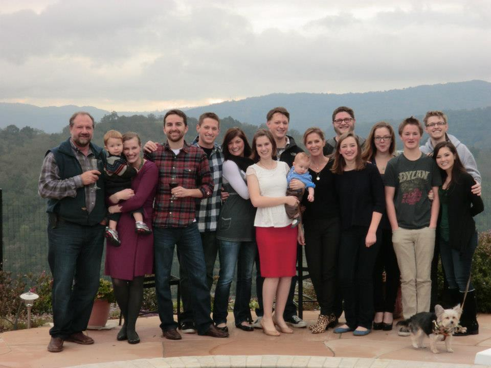

Jacob Persing's Site - Version 1

My name is Jacob Persing, and I currently live in San Jose, CA. I recently graduatued from UC Davis with a degree in Comparative Literature, but I have always been interested in programming and technology in general.
I had completed more than half of the Computer Science degree at Davis, but soon realized that I did not fit well with the style that the university used to teach programming concepts to students, and subsequently decided to finish my Comparative Literature degree and pursue other means to learn how to program.
While I was at UC Davis, I was exposed to several programming languages and learned useful concepts on computer algorithms and the mathematics behind computing, but never really gained any practical experience as to how these concepts were implemented in relation to larger projects.
I learned the basics of C/C++, general data structure concepts, discrete mathematics, and assembly language programming. (MIPS and Intel Syntax) While this knowledge is often useful to have, I found it difficult to relate this to how professional programmers use it in practice.
I have always loved playing video games of all types, but I would say that my favorite game types are First-Person Shooters and Role-Playing Games. I used to be (shamefully) among the top 100 Jet pilots in the world in Battlefield 3 during the height of my "gaming career". While I do not play nearly as much as I used to, I still enjoy playing games every once in a while. I currently play PlanetSide 2, Guild Wars 2, and the newly released Titanfall.
When I say that my family is huge, I mean it. I am one of 8 children in my immediate family and have over 50 first cousins. Needless to say, family gatherings are both chaotic and exciting which can cause my house to get rather crowded during the holidays. I wouldn't have it any other way!
| My mom and dad! | My beautiful girlfriend | Mr. Einsten himself | Elon Musk |
|---|---|---|---|
| My mom and dad have always been a major source of inspiration because they managed to have eight children and still love and provide for them despite how hard it can be. | Nina, my girlfriend of five years is one of my major inspirations. She is intelligent, motivated, and is not afraid to tell me exactly what she thinks and believes. I love her for that. | Einstein inspires me because he was not afraid to challenge the norms of what people believed and was always thinking innovatively in a time when society was reluctant to accept new ways of viewing the universe. | I respect Elon Musk because he is a person who always seems to find new ways of innovating and creating sustainable solutions for today's problems. |
For one, I am extremely excited that I was accepted into Dev Bootcamp and am looking forward to the on-site portion of the program. I also have no illusions about the difficulty or the amount of effort that I will have to put forth in order to be successful in the program. I know I will have to work harder than I ever have before and to be honest, I think I'm ready. I accept that I don't know everything about programming and know that I never will know everything, but dev bootcamp provides the platform and resources that I was looking for that will help guide me toward a future in development.
I truly hope that my time at the bootcamp will allow me to apply the skills that I learn to a future in web development, and I hope that I am able to find a job at a company that I am genuinely excited to work for and contribute to their vision.